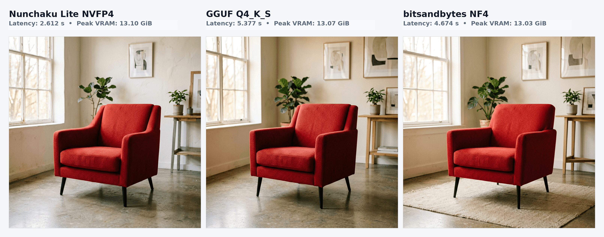
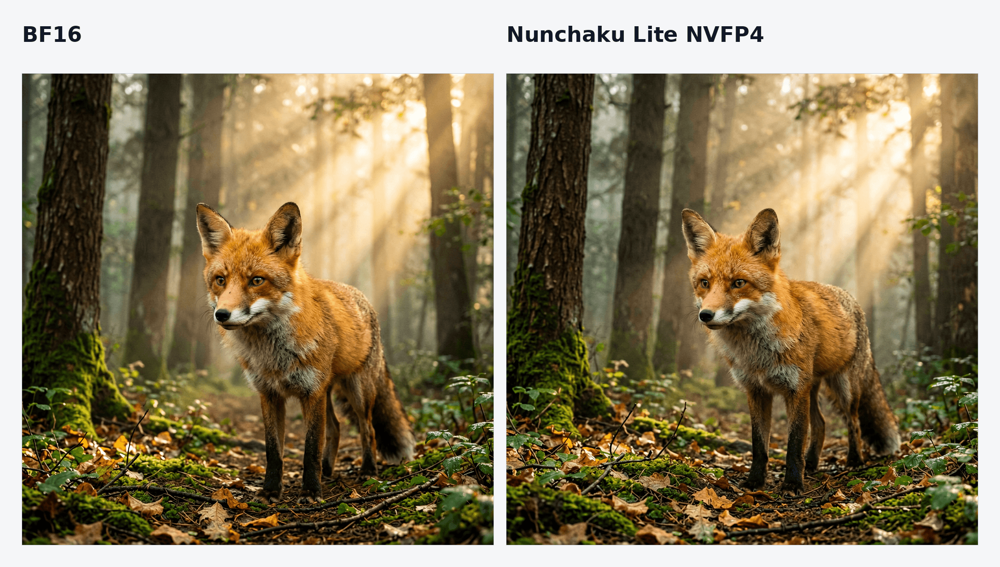
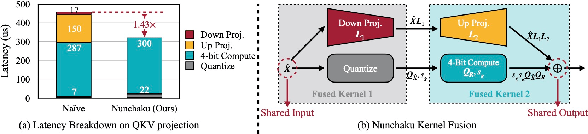
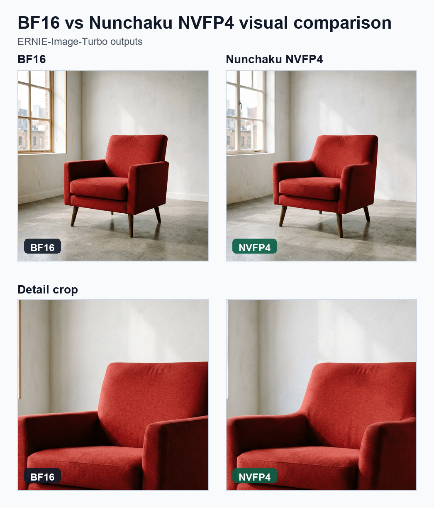

Bringing Nunchaku 4-bit Diffusion Inference to Diffusers
Large diffusion transformers can create stunning images (or even videos, audio snippets, and now text), but loading a modern text-to-image model in BF16 precision often requires 20-30 GB of VRAM, which puts these models out of reach of most consumer GPUs. Quantization is a powerful solution to this problem, and Diffusers already integrates several quantization backends such as bitsandbytes, GGUF, torchao, and Quanto, which we covered in Exploring Quantization Backends in Diffusers.
Most of these backends are weight-only. This means that they store the weights in low precision and dequantize them back to high precision at compute time. This reduces memory usage significantly, but it usually does not make inference faster, and can even add a small latency overhead.
SVDQuant, the quantization method behind the popular Nunchaku inference engine, takes a different approach. It runs the main transformer layers with 4-bit weights and activations (W4A4), reducing memory while also speeding up the denoising loop. The details are covered below, but until now, using these checkpoints required a separate inference library.
With current Diffusers, loading a Nunchaku checkpoint is as simple as
calling from_pretrained(), with no local CUDA compilation
required thanks to the kernels package. In addition, the
companion diffuse-compressor toolkit lets you quantize new
architectures yourself and publish them as regular Diffusers
repositories.

Table of Contents
- Getting started with Nunchaku Lite
- Background: SVDQuant and Nunchaku
- Introducing Nunchaku Lite
- Native loading in Diffusers
- Getting more speed and lower memory
- Benchmarks
- Quantizing your own model
- Ready-to-use checkpoints
- Conclusion
- Acknowledgements
Getting started with Nunchaku Lite
First, install the requirements. You need a recent version of
Diffusers and the Hugging Face kernels package:
pip install -U diffusers transformers accelerate kernels bitsandbytesThen load a pre-quantized pipeline like any other Diffusers model:
import torch
from diffusers import ErnieImagePipeline
pipe = ErnieImagePipeline.from_pretrained(
"lite-infer/ERNIE-Image-Turbo-nunchaku-lite-nvfp4_r32-bnb4-text-encoder",
torch_dtype=torch.bfloat16,
).to("cuda")
image = pipe(
prompt="A cinematic portrait of a red fox in a misty forest at sunrise, "
"detailed fur, volumetric light",
height=1024,
width=1024,
num_inference_steps=8,
guidance_scale=1.0,
generator=torch.Generator("cuda").manual_seed(42),
).images[0]
image.save("output.png")
No custom pipeline class or separate inference engine is needed, and there is nothing to compile locally. The NVFP4 kernels are downloaded from the Hub through the Nunchaku Lite kernels page the first time they are used. This checkpoint pairs a Nunchaku NVFP4 transformer with a bitsandbytes NF4 text encoder, and generates a 1024x1024 image in about 1.7 seconds on an RTX 5090 with a peak memory usage of about 12 GB, compared with about 24 GB for the BF16 pipeline. You can find more details about the Nunchaku Lite checkpoint format in the official Diffusers documentation.
NVFP4 checkpoints require an NVIDIA Blackwell GPU (RTX 50 series, RTX PRO 6000, B200). For earlier generations, use the INT4 variants. See the hardware support table below for details.
Background: SVDQuant and Nunchaku
SVDQuant is the quantization method behind Nunchaku, its reference CUDA inference engine. Standard 4-bit quantization is difficult for diffusion transformers because both weights and activations contain large outliers. SVDQuant handles this by moving activation outliers into the weights, representing the hardest part of each weight matrix with a small 16-bit low-rank branch, and quantizing the remaining residual to 4 bits. Nunchaku makes this fast with fused kernels for the 4-bit path and the low-rank branch.

Introducing Nunchaku Lite
The original Nunchaku engine gets much of its speed from model-specific fused execution paths, such as fused QKV projections and fused GELU/MLP kernels. Those optimizations are tied to each architecture's module layout and checkpoint format, so supporting a new model family usually requires model-specific integration work.
Nunchaku Lite is the new integration path in
Diffusers. With it, Diffusers can load Nunchaku-style checkpoints
without a custom pipeline or a separate inference engine. Under the
hood, Nunchaku Lite patches the relevant nn.Linear modules
of a stock Diffusers model with runtime SVDQ/AWQ linear layers before
the checkpoint is loaded. The CUDA kernels come from the Hub through the
kernels package. Two kernel families are used:
svdq_w4a4: 4-bit weights and activations with the SVDQuant low-rank correction. This layer is used for the transformer's attention and MLP projections, where nearly all of the compute is spent, and is available in INT4 and NVFP4 variants.awq_w4a16: 4-bit weights with 16-bit activations, used for adaptive normalization and modulation projections such as FLUXadanorm_single/adanorm_zeroor Qwen-Image modulation layers. These layers are memory-bound and precision-sensitive, making AWQ a good fit to preserve precision while still saving memory and space.
The trade-off is that, without architecture-specific fused kernels and modules, Nunchaku Lite cannot match the speedup of the original Nunchaku engine. However, the bare-bones implementation still delivers around 30% speedup while retaining the same level of VRAM reduction.
Native loading in Diffusers
If you have used bitsandbytes or torchao in Diffusers, the mechanics
will feel familiar. A Nunchaku Lite model repository is an ordinary
Diffusers repository. The only special part is a
quantization_config block inside the transformer's
config.json:
"quantization_config": {
"quant_method": "nunchaku_lite",
"compute_dtype": "bfloat16",
"svdq_w4a4": {
"precision": "nvfp4",
"group_size": 16,
"rank": 32,
"targets": [
"layers.0.self_attention.to_q",
"layers.0.self_attention.to_k",
"..."
]
},
"awq_w4a16": {
"precision": "int4",
"group_size": 64,
"targets": [
"adaLN_modulation.1",
"..."
]
}
}This config tells Diffusers which modules were quantized, which
scheme they use, and which Nunchaku Lite runtime layer to instantiate
(SVDQW4A4Linear or AWQW4A16Linear).
Because the quantized model keeps the exact module structure of the
dense one, everything downstream (schedulers, LoRA loading hooks,
offloading, torch.compile) sees a normal Diffusers
model.
Hardware support
Nunchaku Lite uses different kernel variants depending on the GPU generation and checkpoint precision:
| Scheme | Precision | Supported GPUs |
|---|---|---|
svdq_w4a4 |
nvfp4 |
Blackwell (RTX 50 series, RTX PRO 6000, B200) |
svdq_w4a4 |
int4 |
Turing / Ampere / Ada (RTX 30 & 40 series, A100, L40S) |
awq_w4a16 |
int4 |
Turing / Ampere / Ada (RTX 30 & 40 series, A100, L40S) |
Volta and Hopper GPUs are currently not supported by the 4-bit kernels. The quantizer validates the GPU's CUDA capability at load time and raises a clear error instead of producing incorrect outputs.
Getting more speed and lower memory
Nunchaku Lite can be combined with other Diffusers memory and speed optimizations.
torch.compile. Compiling the
transformer improves the end-to-end speedup from 1.35x to 1.8x:
pipe.transformer.compile(fullgraph=True)
# or compile_repeated_blocks() for faster compilation
pipe.transformer.compile_repeated_blocks(fullgraph=True)Quantized text encoders. The transformer is not the only component with a large memory footprint. Text encoders such as T5 or Qwen3 can occupy several gigabytes on their own. Further quantizing the text encoder with bitsandbytes NF4 reduces peak VRAM by about 22% in our benchmark.
Offloading. Diffusers offloading helpers such as
enable_model_cpu_offload() and
enable_sequential_cpu_offload() work as usual if you need
to fit the pipeline onto a smaller GPU.
Benchmarks
All numbers below were measured on an NVIDIA RTX PRO 6000 (Blackwell) at 1024x1024 using rootonchair/ERNIE-Image-Turbo-nunchaku-lite-int4-bnb4-text-encoder.
End-to-end latency and memory
| Configuration | Full pipeline | Denoise loop | Peak VRAM | Speedup |
|---|---|---|---|---|
| BF16 baseline | 3.00 s | 2.86 s | 31.1 GB | 1.0x |
| Nunchaku Lite NVFP4 | 2.27 s | 2.13 s | 20.6 GB | 1.35x |
Nunchaku Lite NVFP4 + torch.compile |
1.68 s | 1.53 s | 20.6 GB | 1.8x |
| Nunchaku Lite NVFP4 + NF4 text encoder | 2.29 s | 2.13 s | 16.0 GB | 1.35x |
As shown above, Nunchaku reduces peak VRAM by up to 50% while still
improving latency by roughly 30%. The remaining overhead comes largely
from extra kernel launches, which torch.compile can
mitigate, bringing the full pipeline down to 1.68 s, or 1.8x faster than
the BF16 baseline.
Image quality

Quantizing your own model
Nunchaku Lite support in Diffusers is architecture-agnostic, and the diffuse-compressor toolkit provides an end-to-end SVDQuant workflow for Diffusers models: calibrate, quantize, package, and publish.
Below, we walk through quantizing FLUX.2 Klein 4B as an example. It covers the main steps: inspect the model, calibrate and quantize the transformer, package the result as a Diffusers pipeline, then verify and push it to the Hub. The full tutorial covers every flag in detail.
1. Inspect what will be quantized
The generic scanner walks the model and decides what to target: compatible linears inside the repeated transformer-block stack become SVDQ W4A4 targets, recognized modulation linears become AWQ W4A16 targets, and everything else stays dense.
python examples/text_to_image/quantize_hf.py black-forest-labs/FLUX.2-klein-4B \
--precision int4 --rank 32 --inspect-configAlways read this report before quantizing. For FLUX.2 Klein 4B, the expected result is 100 SVDQ targets, 3 AWQ targets, and 6 dense outer linears, with no missing patterns or duplicate names.
2. Run quantization
The following command runs SVDQuant on the transformer and writes the
quantized checkpoint to
outputs/checkpoints/svdq-int4_r32-flux-2-klein-4b.safetensors:
python examples/text_to_image/quantize_hf.py black-forest-labs/FLUX.2-klein-4B \
--precision int4 \
--output outputs/checkpoints/svdq-int4_r32-flux-2-klein-4b.safetensorsReplace --precision int4 with nvfp4 to
build Blackwell-native weights.
3. Package a Diffusers pipeline
The converter combines the quantized transformer with the base
pipeline's other components, writes the compact
nunchaku_lite configuration into
transformer/config.json, and can optionally convert text
encoders to NF4:
python examples/convert_nunchaku_lite_diffusers.py \
--checkpoint outputs/checkpoints/svdq-int4_r32-flux-2-klein-4b.safetensors \
--model-id black-forest-labs/FLUX.2-klein-4B \
--bnb4-text-encoder text_encoder \
--compute-dtype bfloat16 \
--output-dir outputs/diffusers/FLUX.2-klein-4B-nunchaku-lite-int4-bnb4-text-encoder4. Load, verify, and push to the Hub
import torch
from diffusers import DiffusionPipeline
pipe = DiffusionPipeline.from_pretrained(
"outputs/diffusers/FLUX.2-klein-4B-nunchaku-lite-int4-bnb4-text-encoder",
device_map="cuda",
)
image = pipe(
"A glass robot in a greenhouse, cinematic lighting",
num_inference_steps=4, guidance_scale=1.0,
generator=torch.Generator("cuda").manual_seed(12345),
).images[0]Once the outputs look good, run
pipe.push_to_hub("your-name/your-model-nunchaku-lite-int4").
Other users can then load it with the same
from_pretrained() pattern shown above.
Quantizing models with structural rewrites
Note that the generic path assumes the architecture can be quantized without structural rewrites. For additional speedup, the original Nunchaku engine rewrites groups of Diffusers layers as fused modules. The generic path cannot infer these changes on its own, such as combining separate Q, K, and V projections into one module or splitting a fused projection across several modules.
FLUX.1-dev's QKV projection is a concrete example. Diffusers defines three separate modules:
self.to_q = torch.nn.Linear(query_dim, self.inner_dim, bias=bias)
self.to_k = torch.nn.Linear(query_dim, self.inner_dim, bias=bias)
self.to_v = torch.nn.Linear(query_dim, self.inner_dim, bias=bias)The Nunchaku FLUX module combines those layers into one
quantized to_qkv module:
to_qkv = fuse_linears([other.to_q, other.to_k, other.to_v])
self.to_qkv = SVDQW4A4Linear.from_linear(to_qkv, **kwargs)This grouped module is required because Nunchaku's fused operator consumes the QKV projection, Q/K normalization, and rotary embeddings together. By comparison, the default Diffusers path executes them separately:
query = attn.to_q(hidden_states)
key = attn.to_k(hidden_states)
value = attn.to_v(hidden_states)
query = query.unflatten(-1, (attn.heads, -1))
key = key.unflatten(-1, (attn.heads, -1))
value = value.unflatten(-1, (attn.heads, -1))
query = attn.norm_q(query)
key = attn.norm_k(key)
if image_rotary_emb is not None:
query = apply_rotary_emb(query, image_rotary_emb, sequence_dim=1)
key = apply_rotary_emb(key, image_rotary_emb, sequence_dim=1)The Nunchaku path supplies the grouped projection, normalization modules, and rotary embeddings to one fused operator:
qkv = fused_qkv_norm_rottary(
hidden_states, attn.to_qkv, attn.norm_q, attn.norm_k, image_rotary_emb
)This is the structural rewrite that the generic path cannot infer.
Diffusers has three destination modules with to_q,
to_k, and to_v parameter prefixes, while
Nunchaku has one grouped module under to_qkv. A
model-specific target config or adapter must state that the Q, K, and V
parameters should be concatenated along the output dimension, in that
order, and loaded into to_qkv.
Structural rewrites like these are described by a model-specific target config during quantization and handled by a small runtime adapter when the checkpoint is loaded. The FLUX.2 Klein 4B quantization script provides a concrete target-config example for producing a structurally rewritten checkpoint, while rootonchair/nunchaku-lite provides the runtime adapters needed to load grouped QKV tensors, split fused projections, and other fused operations. For the complete workflow, you can check the Adding A New Model guide.
Ready-to-use checkpoints
To get started right away, check out the following repositories:
- rootonchair/ERNIE-Image-Turbo-nunchaku-lite-int4-bnb4-text-encoder: INT4 ERNIE-Image-Turbo with a bitsandbytes NF4 text encoder
- rootonchair/ERNIE-Image-Turbo-nunchaku-lite-nvfp4-bnb4-text-encoder: NVFP4 ERNIE-Image-Turbo with a bitsandbytes NF4 text encoder
- OzzyGT/Krea_2_Turbo_nunchaku_lite_nvfp4: NVFP4 Krea 2 Turbo checkpoint
- lite-infer: more Nunchaku Lite checkpoints and collections
Conclusion
Nunchaku's SVDQuant kernels are one of the most effective ways to run
diffusion transformers efficiently on consumer hardware, and they are
now natively supported in Diffusers. Pre-quantized checkpoints load with
from_pretrained(), and the diffuse-compressor toolkit makes
it possible to quantize new architectures without waiting for engine
support. By quantizing both weights and activations, the W4A4 path
lowers memory use while improving denoising latency, keeping image
quality close to the BF16 original.
If you quantize and publish a new model, we would love to hear about it. Share it on the Hub and let us know! If you have any questions about this feature, feel free to join our Discord.
To learn more, check out the following resources:
- Diffusers Nunchaku documentation
- The integration PR (huggingface/diffusers#14100)
- SVDQuant paper and the Nunchaku engine
- diffuse-compressor
- Previous posts: Exploring Quantization Backends in Diffusers and Memory-efficient Diffusion Transformers with Quanto and Diffusers
Acknowledgements
Thanks to the Diffusers maintainers for reviews and guidance
throughout the integration, and to the MIT HAN Lab / Nunchaku team for
the original SVDQuant work. Thanks to Marc Sun for providing feedback on
the blog post. Thanks to Álvaro Somoza for trying out
nunchaku-lite and for providing feedback.
rootonchair is also grateful to SilverAI for supporting
this work and providing the environment in which much of this
development took place.